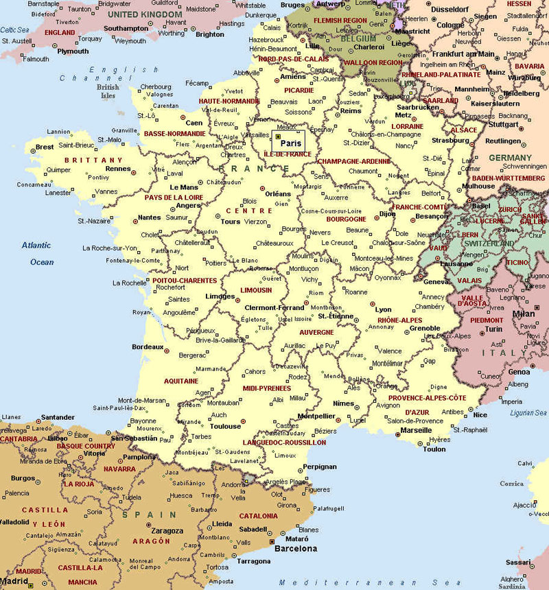

Крупнейшие города:
Париж
Марсель
Лион
Тулуза
Ницца
Официальные языки:
Территория:
48-я в мире
Всего - 674 685км²
% водной поверхности - 0,26%
Население:
Оценка (2017) - 66 991 000 чел.
Плотность - 103 чел./км²
Названия жителей:
Француз
Француженка
Французы
Валюта:
Евро (EUR)
Французский франк (FRF) (До 1999 года)
Предками современного французского народа были германские племена франков, проживавших на берегу Рейна в III веке. Однако история французской территории началась гораздо раньше, в доисторический период. Исследования показали, что питекантропы населяли земли Галлии около 1 млн. лет назад. Со временем их сменили homo sapiens, то есть предки современного человека. Об этом периоде сведений практически нет.
Кельтский период во Франции начался около X века до н.э. и растянулся на несколько столетий. Во II веке до н.э. началась Римская эпоха. Так как римляне называли кельтов галлами, то страна стала называться Галлией. Галлия занимала обширные территории, от Атлантического океана до Средиземного моря. С приходом римлян в обиход вошли латинский язык и римский образ жизни, но кельтская культура и искусство сохранились.
В середине V века власть римских наместников ослабла, началось Раннее Средневековье. В этот период Франция распалась на десятки мелких королевств. В области Рейна правили бургунды, на севере - франки, на востоке все еще сохранялось владычество Рима. Единство в стране было достигнуто лишь при Карле I. Этого правителя еще при жизни называли Великим. В 800 году он был избран императором Римской империи. К сожалению, после его смерти его потомки начали борьбу за наследство, чем сильно ослабили Западную Европу.
С XII века началось Позднее Средневековье - противоречивая эпоха для французского народа. С одной стороны, это было время расцвета искусства, поэзии, архитектуры, а с другой наблюдались серьезные кризисы. Так, в XIV веке повсеместно вспыхивали эпидемии чумы, началась Столетняя война с Англией. Однако распри в стране после этой войны не закончились. Во время правления династии Валуа начались столкновения между католиками и гугенотами, закончившиеся Варфоломеевской ночью 24 августа 1572 года. В эту ночь в массовой резне гугенотов погибло около 30 тысяч людей.
После Валуа к власти пришли Бурбоны. Первым королем из этой династии стал Генрих IV (1589-1610). Во время его правления был принят закон о веротерпимости. Много сделал для блага страны кардинал Ришелье, обладавший фактической властью во время Людовика XIII. Он сумел поднять престиж Франции в Европе. Следующие правители заметно ослабили экономику страны войнами и бездумными увеселениями. В результате в стране началась революция, итогом которой стал переворот 1799 года. С этого момента начался период правления Наполеона. Проведя несколько успешных, а затем провальных военных кампаний он был свергнут.
С 1814 года начался период восстановления монархии. Сначала к власти пришел Людовик XVIII, затем Карл X, а после него Луи-Филипп Орлеанский. В середине XIX столетия произошла еще одна революция, после чего власть перешла к Временному правительству. Такая смена правителей происходила до тех пор, пока Франция в пятый раз получила статус республики и назначила президентом генерала де Голля (1959-1969). Именно он был задействован в освобождении страны от немецких оккупантов и восстановлении экономического баланса.

Крючкова Вера. IVKHK 2018